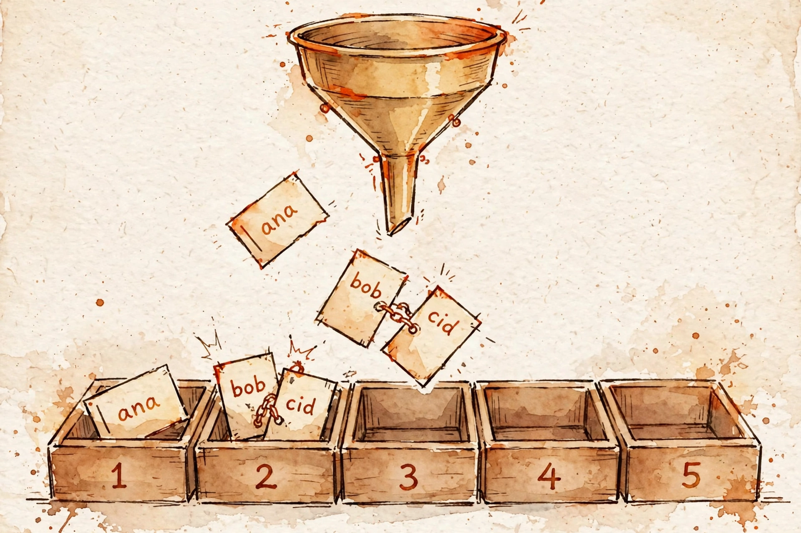

An array gives O(1) by position; a hash map gives O(1) by
name. This guide generalizes L1's index arithmetic to
slot = hash(key) mod capacity, derives the birthday bound on collisions,
compares chaining with open addressing, opens up CPython's dict, and uses
Two Sum as the canonical complement lookup.

L1 recap (the idea we reuse): a[i] is O(1) because the
address is computed — base + i × wordsize — never searched. The
hash map keeps that contract and generalizes the key: slot = hash(key) mod
m is still arithmetic, still O(1).
L2 recap (the idea we reuse): strings are the canonical keys, and the
hashability contract explains why str and tuple hash but
list does not: a key's hash must not change while it lives in the table,
so keys must be immutable.
L7 recap (the idea we reuse): the average vs. worst case distinction. Hash maps are O(1) expected, Θ(n) adversarial — and from today on, you say which one you mean.
The intuition: a card catalog is a hash map made of wood. You walk in with a title — the librarian doesn't scan every drawer. She knows a rule that turns any title into a drawer number, walks straight to it, and opens it. A rule that converts names into slot numbers, plus a plan for when two names pick the same slot.
dict.get/setdefault, and the insertion-order guarantee since 3.7. Verified live Oct 2, 2026.Counter for L6's frequency patterns and defaultdict for grouping without the if k not in d dance. Verified live Oct 1, 2026.Separate chaining: each slot holds a linked list; colliding keys just line up in the list. Simple, and deletion is easy — but you pay per-node allocation and pointer chasing.
Open addressing: no lists. If the slot is taken, probe for the next free one — linear probing walks +1, +2, …; quadratic probing and double hashing use smarter strides to avoid clustering (keys piling into the same neighborhood). Better cache behavior (everything lives in one array), but deletion needs tombstones.
What CPython does: open addressing on a power-of-two table. The slot
is hash(key) & (m−1) — a bitmask, cheaper than modulo. Collisions are
resolved by a perturbation probe sequence that pseudo-randomizes the
walk instead of stepping linearly. Each entry caches its key's hash, so lookups never
re-hash. And the table doubles when it passes 2/3 full — the load
factor α = n/m stays bounded, which is the whole secret of the next section.
Assume simple uniform hashing: every key lands on every slot with equal probability, independently. Let α = n/m be the load factor — the average chain length.
Why: you always inspect the home slot (1 probe), and each of the other n−1 keys lands in it with probability 1/m, so the expected chain behind it is α. CPython doubles the table at α = 2/3, so lookups cost about 1.7 probes on average — forever, no matter how large n grows. That is what "O(1) average" means: the cost is bounded by a constant because α is bounded by a constant.
Inserts are amortized O(1) for the same reason appends were in L1: doubling. Resizing an n-element table costs O(n), but it happens only at sizes 1, 2, 4, 8, … — the Σ2k ≈ 2n argument from L1, reused unchanged.
Spaced retrieval: the birthday bound from §1's lesson — n ≈ 1.18√m for even odds of a collision. With m = 100 slots, ~12 random keys collide with 50% probability. This is the same square-root scaling that shows up in cryptographic birthday attacks — and it's why "just make the table big" never quite escapes collisions; the table has to be engineered for them.
"Given an array of integers nums and an integer target, return indices of the two
numbers that add up to target." Brute force checks every pair — n(n−1)/2 of them,
Θ(n²). The hash-map insight is a question, not a loop: for each element x, what
partner am I looking for? The answer is target − x — and a hash map
answers "have I seen it?" in O(1).
# LeetCode 1 — Two Sum (one pass)
def twoSum(nums: list[int], target: int) -> list[int]:
seen: dict[int, int] = {} # value -> index
for i, x in enumerate(nums):
need = target - x
if need in seen: # the complement already appeared
return [seen[need], i]
seen[x] = i # remember x for later elements
raise ValueError("no solution")
Complexity: n iterations × O(1) average map ops → O(n) time. The map holds at most n entries → O(n) space. The one-pass form encodes the interview reflex: ask for the partner before you store the element — that ordering guarantees i ≠ j with no extra bookkeeping.
The set's cameo — Contains Duplicate (LC 217): if x in seen:
return True. The hash map with nothing to remember but presence — a
set is the membership oracle, and this is the cheapest problem that proves it.
Set — "have I seen this before?", "first duplicate", "does it exist?", cycle detection. The tell-tale cost shape: membership tests inside a loop → build a set once and turn n × O(n) into n × O(1).
Dict — "for each element, find its partner/complement" (Two Sum's
shape), "count / most frequent / group by" (L6's whole lesson: Counter),
"remember a result indexed by something".
The Python-specific tell: x in my_list anywhere near a
loop is a code smell — the same hidden-cost trap pop(0) was in L4. Convert
the candidates to a set and the checks become O(1).
d[[1,2]] = x → TypeError: unhashable type: 'list'. Use tuple or frozenset. The deep reason: a mutable key can change its hash mid-life and get lost in the wrong slot — the contract forbids it.RuntimeError: dictionary changed size during iteration. Iterate over list(d) if you must mutate.d[k] vs d.get(k). Bracket access raises KeyError on a miss; .get(k) returns None or your default. In Two Sum the in check does the guarding.in on a list is a scan. x in my_list is O(n), not O(1). Put the candidates in a set first; n checks drop from Θ(n²) to O(n).PYTHONHASHSEED). Your answer in the interview is to name it, not fear it — and never persist a hash across runs.L6 · Frequency & grouping patterns — today's dict becomes
Counter and group-by: anagrams, top-k frequencies.
L23 · Design: LRU cache — dict + doubly-linked list: O(1) lookup from today, O(1) eviction from L3, composed into a design problem.
L28 · Top-k patterns — the hash map's counts feed the heap.
L16 · Prefix sums — the prefix-sum + hash map combo solves subarray-sum queries in O(n): the map doing the clever work.
L42 · Bit manipulation — tiny membership sets as bitmasks, the hash map's minimalist cousin.
Cover the answers. Say each one aloud until it's clean.
a[i] computes base + i × wordsize — O(1), no scanning. A hash map keeps that contract with the key generalized: slot = hash(key) mod m is still arithmetic, still O(1). Lookup by name at lookup-by-index speed.
P(no collision) = ∏(1 − i/m) ≈ e−n²/2m. Set to 1/2 → n ≈ √(2m ln 2) ≈ 1.18√m. With 100 slots, ~12 keys give 50% odds. Collisions are the normal weather.
1 + α probes on average, where α = n/m is the load factor. CPython doubles the table at α = 2/3, so the cost is bounded by ~1.7 probes forever — bounded by a constant because α is bounded by a constant.
The same doubling argument as L1's appends: resizes happen at sizes 1, 2, 4, 8, …, so total resize work over n inserts is Σ2k ≈ 2n — O(1) each, amortized.
i=0: need 7, not in {} → seen={2:0}. i=1: need 2, in seen → return [0,1]. The ordering — ask for the complement before storing the element — guarantees i ≠ j.
Keys must be immutable because the slot depends on the hash: a mutable key that changes its hash mid-life would be stranded in the wrong slot. Lists are mutable, so Python forbids them as keys; use tuple or frozenset.
Build a set once: s = set(candidates). Each x in my_list is an O(n) scan; each x in s is an O(1) hash lookup. n checks drop from Θ(n²) to O(n).
(1) Hashing a string key costs O(length of the key) — the O(1) hides a scan of the key. (2) Adversarial collisions degrade to Θ(n) worst case; Python's defense is per-process SipHash randomization (PYTHONHASHSEED), and hashes must never be persisted across runs.
"An array gives O(1) by integer index — pointer arithmetic, no scanning. A hash map
generalizes it: slot equals hash of the key mod capacity, so lookup by name
costs the same. The catch is collisions — the birthday bound says they arrive after
about root-m keys, so the table chains or probes and keeps the load factor bounded by
doubling on resize. Under uniform hashing the expected probe count is one plus alpha, a
constant, so operations are O(1) average — the doubling argument is the same one that
made appends amortized O(1) back in L1. The interview reflex: whenever the problem asks
'have I seen its partner?' — Two Sum is the canonical shape: one pass, look up the
complement, O(n) time instead of O(n²). And the two Python traps: keys must be
immutable, and in on a list is O(n) — build a set."